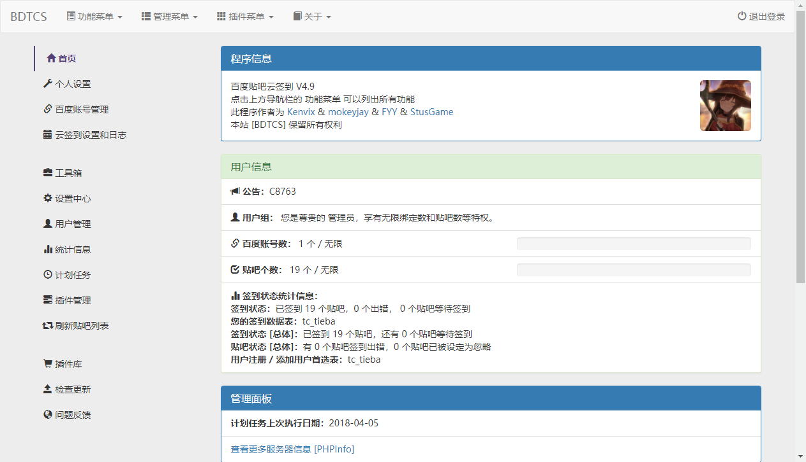

百度貼吧雲簽到 是一個開源的 php 程式，可以架設出一個自動簽到百度貼吧的系統
Google 到很多貼吧 自動簽到之類的網站很多都是用這個系統的
所以我就用 GearHost 的免費伺服器和資料庫就架了一個私人使用的簽到伺服器

教學
註冊 GearHost 帳號(選擇性)
如果有其他有 php 和 mysql 伺服器可以直接跳過這一步
到 GearHost 註冊一個帳號
然後在管理頁面中左側找到 CloudSites 和 Databases，分別建立一個網站和資料庫
關於資料庫請務必選擇 MYSQL，不要選到其他的
下載與設定
在 releases 頁面上找到一個想要的版本下載(我用 V4.9)
下載後解壓縮到任何一個資料夾，然後打開裡面有個檔案 config.php
在裡面找到下面的文字，按照注釋修改1
2
3
4
5
6
7
8
9////////////////////////////以下选项只需在使用MySQL时填写////////////////////////////
//MySQL 数据库地址，普通主机一般为localhost
define('DB_HOST','資料庫位置');
//MySQL 数据库用户名
define('DB_USER','使用者名稱');
//MySQL 数据库密码
define('DB_PASSWD','使用者密碼');
//MySQL 数据库名称
define('DB_NAME','資料庫名稱');
上傳網站 (GearHost)
其他伺服器請用各自支援的方式上傳
輸入下方的指令來建立一個 git repo1
2
3git init
git add .
git commit -m "init"
然後到剛剛新增的網站頁面找到 Deploy 點進去
然後在下面找到 LocalGit 的來啟用後會看到下面的資訊1
2
3Git URL: GITURL
Username: USERNAME
Password: PASSWORD
使用上面的資訊依序輸入指令，如果有遇到到要輸入帳號密碼的就填進去就好1
2git remote add deploy GITURL
git push -u deploy master
然後完成之後在頁面上找到 Launch CloudSite 就能進入網頁的安裝介面了
安裝
安裝介面都是中文，只看字應該沒問題
不過在第三步驟會問你是否已經設定過資料庫了，那邊請選擇 是 就好
接下來完成後進入首頁，用在第三步驟設定的管理員帳號登入就 ok 了
排程
因為它沒辦法自己定時做一些工作(簽到、刷新列表等…)，所以需要使用 cron 來定時
不過對於它來說我覺得使用 cron-job 這個免費服務比較適合，也更簡單
到它的網站上註冊一個帳號，然後到 Create cronjobs 頁面中新增一個排程
title 隨便取，而網址要設定到網站下的 /do.php 才行
例如: https://MY_TIEBA_CLOUD_SIGN_SERVER.net/do.php
而 Schedule 我是設成每 30 分執行一次，可以按照自己需求調整
建議不要設定為一天只執行一次
因為預設設定每次簽到只會簽到 10 個吧(能自己調整設定)
然後後面其他設定可以按照自己需求調整，最後按下 Save 儲存設定就完成了
Gravatar
雖然它有支援 Gravatar，但是使用的是架在中國的 Gravatar mirror 伺服器(而且還掛掉了)
不過這是可以更改的，我是把它改成官方的
在 lib/sfc.functions.php 中找到函數 gravatar (約在 90 行左右)
把它改成下方這樣，然後重新上傳後應該就 ok 了1
2
3
4function gravatar($email, $s = 140, $d = 'mm', $g = 'g', $site = 'moefont') {
$hash = md5($email);
return "https://www.gravatar.com/avatar/$hash?s=$s&r=$g";
}
插件
插件的其中一種安裝方法是直接在管理員介面中上傳 zip 檔就好
另一種是把 zip 解壓縮出來的資料夾放到 plugins 資料夾中
需要讓插件的資料夾名稱和裡面的主要 php 主檔名相同
Ex:plugins/pch18_relist/pch18_relist.php
使用我架的伺服器
如果想直接使用的話可以到 BDTCS 中使用註冊碼 blog.maple3142.net 註冊帳號
不過不保證會一直開啟註冊，也不保證穩定信
- 2018/4/5 開放註冊，註冊碼
blog.maple3142.net